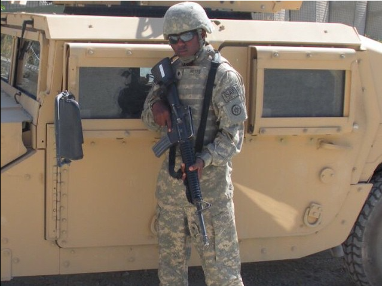

I am a dedicated Cloud Engineer with a Bachelor’s degree in Computer Science and a distinguished background as an Army war veteran and squad leader. My military experience has instilled in me a robust discipline and exceptional leadership skills. I bring these qualities to cloud engineering and DevOps, where I leverage cutting-edge technologies and methodologies to develop scalable, efficient cloud infrastructures and streamline deployment processes.
With a strong foundation in languages like JavaScript and Python, and expertise in systems such as AWS and Linux, I am adept at designing solutions that enhance operational capabilities and drive technological innovation. My passion for cloud engineering is driven by a commitment to optimizing cloud solutions and improving system performance.
In my spare time, I enjoy practicing Brazilian Jiu-Jitsu and Muay Thai. These activities help me maintain a balanced lifestyle and foster a mindset of continuous improvement. They not only keep me physically fit but also enhance my problem-solving abilities and mental resilience, qualities that are invaluable in the fast-paced world of technology.
Photos

2007-2008 military deployment
During my time in the Army, I was deployed to Afghanistan, where I served in various capacities that required adaptability and resilience. While not a squad leader at the time, I was responsible for critical tasks such as securing key locations, conducting patrols, and supporting mission objectives. This deployment taught me the importance of teamwork, discipline, and effective communication under pressure. These experiences have greatly contributed to my ability to handle challenging situations in my current role as a Cloud Engineer, where precision and reliability are essential.
2023 University graduation
I graduated from the University of Maryland Global Campus with a Bachelor's degree in Computer Science. During my studies, I gained a solid foundation in various programming languages, algorithms, data structures, and software development methodologies. The curriculum included hands-on projects that allowed me to apply theoretical knowledge to real-world scenarios, enhancing my problem-solving and critical thinking skills. This education has equipped me with the technical expertise and analytical abilities necessary for a successful career in cloud engineering and DevOps.

Bjj Hobby
In my free time, I am passionate about practicing Brazilian Jiu-Jitsu and Muay Thai. These martial arts disciplines not only keep me physically fit but also enhance my mental toughness and strategic thinking. Brazilian Jiu-Jitsu focuses on ground fighting and submission techniques, teaching me the importance of leverage, patience, and precision. Muay Thai, known as the "Art of Eight Limbs," emphasizes striking with fists, elbows, knees, and shins, fostering agility, coordination, and resilience. Both hobbies provide a balanced lifestyle and contribute to my personal growth, discipline, and problem-solving skills, which are invaluable in my professional life as a Cloud Engineer.


{kind=link}
{kind=link}
{kind=link}
{kind=link}
{kind=link}
{kind=link}
{kind=link}
{kind=link}
{kind=link}